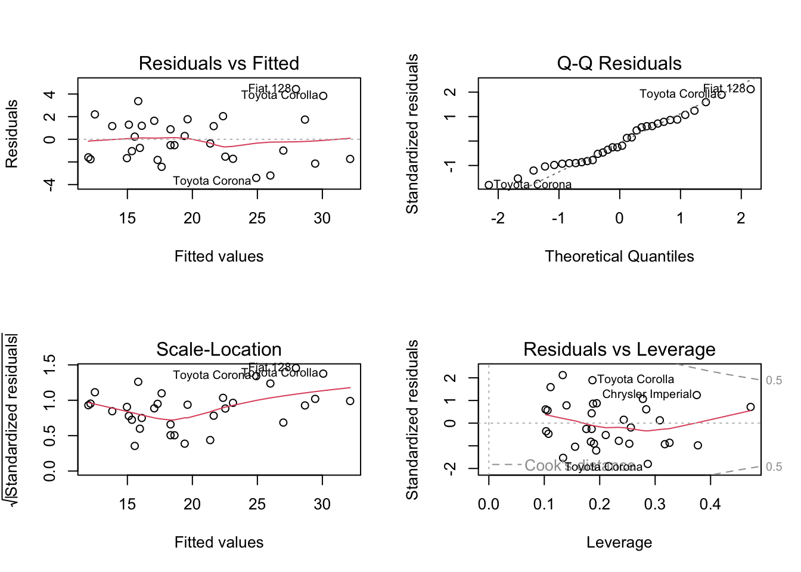
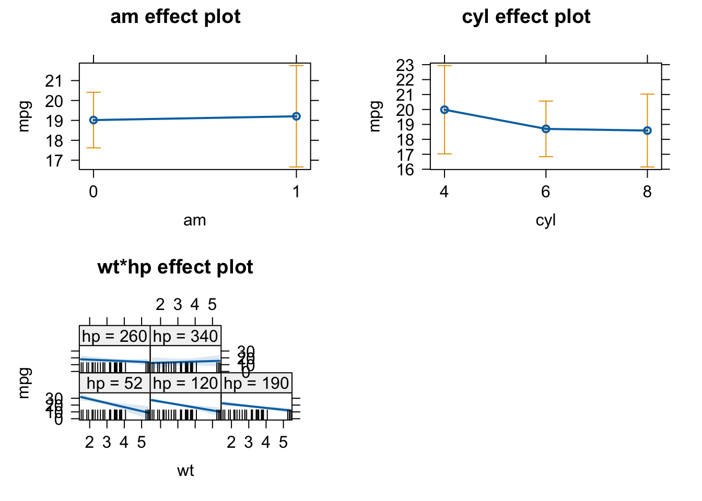

library(effects)
## Carregando pacotes exigidos: carData
## lattice theme set by effectsTheme()
## See ?effectsTheme for details.
library(MuMIn)Exercise - Multiple Linear Regression
| Formula | Meaning | Details |
|---|---|---|
y~x_1 |
\(y=a_0 +a_1*x_1\) | Slope+Intercept |
y~x_1 - 1 |
\(y=a_1*x_1\) | Slope, no intercept |
y~I(x_1^2) |
\(y=a_0 + a_1*(x_1^2)\) | Quadratic effect |
y~x_1+x_2 |
\(y=a_0+a_1*x_1+a_2*x_2\) | Multiple linear regression (two variables) |
y~x_1:x_2 |
\(y=a_0+a_1*(x_1*x_2)\) | Interaction between x1 and x2 |
y~x_1*x_2 |
\(y=a_0+a_1*(x_1*x_2)+a_2*x_1+a_3*x_2\) | Interaction and main effects |
In this exercise you will:
- perform multiple linear regressions
- interpret regression output and check the residuals
- plot model predictions including interactions
Before you start, remember to clean your global environment (if you haven’t already) using rm(list=ls()).
To conduct the exercise, please load the following packages:
You will work with the following datasets:
- mtcars
- Cement{MuMIn}
The second dataset is from the MuMIn package (as shown by the curly brackets).
Useful functions
for multiple linear regression
lm() - fit linear model
summary(fit) - apply to fitted model object to display regression table
plot(fit) - plot residuals for model validation
anova(fit) - apply type I ANOVA (variables included sequentially) to model to test for effects all levels of a factor
Anova(fit) - car package; use type II ANOVA (effects for predictors when all other predictors are already included) for overall effects
scale() - scale variable
sqrt() - square-root
log() - calculates natural logarithm
plot(allEffects(fit)) - apply to fitted model object to plot marginal effect; effects package
par() - change graphical parameters
use oldpar \<- par(mfrow = c(number_rows, number_cols)) to change figure layout including more than 1 plot per figure
use par(oldpar) to reset graphic parameter
for model selection
stepAIC(fullModel) - perform stepwise AIC model selection; apply to full model object, MASS package
dredge(fullModel) - perform global model selection, MuMIn package
model.avg() - perform model averaging
AIC(fit) - get AIC for a fitted model
anova(fit1, fit2) - compare two fitted models via Likelihood Ratio Test (LRT)
Analyzing the mtcars dataset
Imagine a start up company wants to rebuild a car with a nice retro look from the 70ies. The car should be modern though, meaning the fuel consumption should be as low as possible. They’ve discovered the mtcars dataset with all the necessary measurements and they’ve somehow heard about you and your R skills and asked you for help. And of course you promised to help, kind as you are.
The company wants you to find out which of the following characteristics affects the fuel consumption measured in miles per gallon (mpg). Lower values for mpg thus reflect a higher fuel consumption. The company wants you to include the following variables into your analysis:
- number of cylinders (
cyl) - weight (
wt) - horsepower (
hp) - whether the car is driven manually or with automatic (
am)
In addition, Pawl, one of the founders of the company suggested that the effect of weight (wt) might be irrelevant for powerful cars (high hp values). You are thus asked to test for this interaction in your analysis as well.
Question
Carry out the following tasks:
- Perform a multiple linear regression (change class for
cylandamto factor) - Check the model residuals
- Interpret and plot all effects
You may need the following functions:
as.factor()lm()summary()anova()plot()allEffects()
Use your results to answer the questions:
Which of the following statements are correct? (Several are correct).
Concerning the interaction between weight (wt) and horsepower (hp), which of the following statements is correct?
This is the code that you need to interpret the results.
# change am and cyl from numeric to factor
mtcars$am <- as.factor(mtcars$am)
mtcars$cyl <- as.factor(mtcars$cyl)
# multiple linear regression and results:
# (we need to scale (standardize) the predictors wt and hp, since we include their interaction)
carsfit <- lm(mpg ~ am + cyl + scale(wt) * scale(hp), dat = mtcars)
# weight is included as the first predictor in order to have
# it as the grouping factor in the allEffects plot
summary(carsfit)
##
## Call:
## lm(formula = mpg ~ am + cyl + scale(wt) * scale(hp), data = mtcars)
##
## Residuals:
## Min 1Q Median 3Q Max
## -3.4121 -1.6789 -0.4446 1.3752 4.4338
##
## Coefficients:
## Estimate Std. Error t value Pr(>|t|)
## (Intercept) 19.9064 1.5362 12.958 1.36e-12 ***
## am1 0.1898 1.4909 0.127 0.899740
## cyl6 -1.2818 1.5291 -0.838 0.409813
## cyl8 -1.3942 2.1563 -0.647 0.523803
## scale(wt) -3.6248 0.9665 -3.750 0.000938 ***
## scale(hp) -1.8602 0.8881 -2.095 0.046503 *
## scale(wt):scale(hp) 1.5631 0.7027 2.224 0.035383 *
## ---
## Signif. codes: 0 '***' 0.001 '**' 0.01 '*' 0.05 '.' 0.1 ' ' 1
##
## Residual standard error: 2.246 on 25 degrees of freedom
## Multiple R-squared: 0.888, Adjusted R-squared: 0.8612
## F-statistic: 33.05 on 6 and 25 DF, p-value: 1.021e-10
# The first level of each factor is used as a reference, i.e. in this case a manual gear shift with 4 gears.
# From the coefficient cyl6 we see that there is no significant difference in fuel consumption (= our response) between 4 gears (the reference) and 6 gears.
# In contrast, the predictors weight (wt) and horsepower (hp) have a significant negative effect on the range (mpg), so that they both increase fuel consumption.
# check residuals
old.par = par(mfrow = c(2, 2))
plot(carsfit)
par(old.par)
# plot effects
plot(allEffects(carsfit))
## Warning in Analyze.model(focal.predictors, mod, xlevels, default.levels, : the
## predictors scale(wt), scale(hp) are one-column matrices that were converted to
## vectors
## Warning in Analyze.model(focal.predictors, mod, xlevels, default.levels, : the
## predictors scale(wt), scale(hp) are one-column matrices that were converted to
## vectors
## Warning in Analyze.model(focal.predictors, mod, xlevels, default.levels, : the
## predictors scale(wt), scale(hp) are one-column matrices that were converted to
## vectors
# We can see in the wt*hp plot, that for high values of hp wt has no effect on the response mpg. We conclude that Pawl was right.
Question
- What is the meaning of “An effect is not significant”?
- Is an effect with three *** more significant / certain than an effect with one *?
You should NOT say that the effect is zero, or that the null hypothesis has been accepted. Official language is “there is no significant evidence for an effect(p = XXX)”. If we would like to assess what that means, some people do a post-hoc power analysis (which effect size could have been estimated), but better is typically just to discuss the confidence interval, i.e. look at the confidence interval and say: if there is an effect, we are relatively certain that it is smaller than X, given the confidence interval of XYZ.
Many people view it that way, and some even write “highly significant” for *** . It is probably true that we should have a slightly higher confidence in a very small p-value, but strictly speaking, however, there is only significant, or not significant. Interpreting the p-value as a measure of certainty is a slight misinterpretation. Again, if we want to say how certain we are about the effect, it is better to look again at the confidence interval, i.e. the standard error and use this to discuss the precision of the estimate (small confidence interval / standard error = high precision / certainty).
Interactions with the plantHeight dataset
Plant Height revisited
Revisit exercise our previous analysis of EcoData::plantHeight
library(EcoData)
model = lm(loght ~ temp, data = plantHeight)Use (separate) multiple regressions to test if:
- If temp or NPP (net primary productivity) is a more important predictor (importance == absolute effect size).
- If growth forms (variable growthform) differ in their temperature effects. (use an interaction)
- If the effect of temp remains significant if we include latitude and an interaction of latitude with temp. If not, why? Tip: plot temp ~ lat.
plantHeight$sTemp = scale(plantHeight$temp)
plantHeight$sLat = scale(plantHeight$lat)
plantHeight$sNPP = scale(plantHeight$NPP)
# relevel
plantHeight$growthform2 = relevel(as.factor(plantHeight$growthform), "Herb")- NPP or Temp?
fit = lm(loght ~ sTemp + sNPP, data = plantHeight)
summary(fit)
##
## Call:
## lm(formula = loght ~ sTemp + sNPP, data = plantHeight)
##
## Residuals:
## Min 1Q Median 3Q Max
## -1.69726 -0.47935 0.04285 0.39812 1.77919
##
## Coefficients:
## Estimate Std. Error t value Pr(>|t|)
## (Intercept) 0.44692 0.05119 8.731 2.36e-15 ***
## sTemp 0.20846 0.07170 2.907 0.004134 **
## sNPP 0.24734 0.07164 3.452 0.000702 ***
## ---
## Signif. codes: 0 '***' 0.001 '**' 0.01 '*' 0.05 '.' 0.1 ' ' 1
##
## Residual standard error: 0.6711 on 169 degrees of freedom
## (6 observations deleted due to missingness)
## Multiple R-squared: 0.2839, Adjusted R-squared: 0.2754
## F-statistic: 33.5 on 2 and 169 DF, p-value: 5.553e-13NPP is slightly more important
- Interaction with growth form
fit = lm(loght ~ growthform2 * sTemp , data = plantHeight)
summary(fit)
##
## Call:
## lm(formula = loght ~ growthform2 * sTemp, data = plantHeight)
##
## Residuals:
## Min 1Q Median 3Q Max
## -1.19634 -0.21217 -0.00997 0.22750 1.62398
##
## Coefficients: (2 not defined because of singularities)
## Estimate Std. Error t value Pr(>|t|)
## (Intercept) -0.310748 0.062150 -5.000 1.51e-06 ***
## growthform2Fern 0.624160 0.375650 1.662 0.098586 .
## growthform2Herb/Shrub 0.456394 0.377088 1.210 0.227967
## growthform2Shrub 0.562799 0.083100 6.773 2.36e-10 ***
## growthform2Shrub/Tree 0.957088 0.486858 1.966 0.051069 .
## growthform2Tree 1.586005 0.080756 19.640 < 2e-16 ***
## sTemp 0.203808 0.053231 3.829 0.000185 ***
## growthform2Fern:sTemp NA NA NA NA
## growthform2Herb/Shrub:sTemp NA NA NA NA
## growthform2Shrub:sTemp 0.103357 0.076860 1.345 0.180636
## growthform2Shrub/Tree:sTemp -0.004614 0.526866 -0.009 0.993024
## growthform2Tree:sTemp -0.244410 0.077661 -3.147 0.001971 **
## ---
## Signif. codes: 0 '***' 0.001 '**' 0.01 '*' 0.05 '.' 0.1 ' ' 1
##
## Residual standard error: 0.3713 on 158 degrees of freedom
## (10 observations deleted due to missingness)
## Multiple R-squared: 0.796, Adjusted R-squared: 0.7844
## F-statistic: 68.51 on 9 and 158 DF, p-value: < 2.2e-16Yes, because (some) interactions are significant.
Note that the n.s. effect of sTemp is the first growth form (Ferns), for which we had only one observation. In a standard multiple regression, you don’t have p-values for the significance of the temperature effect against 0 for the other growth forms, because you test against the reference. What one usually does is to run an ANOVA (see chapter on ANOVA) to see if temp is overall significant.
anova(lm(loght ~ growthform * sTemp , data = plantHeight))
## Analysis of Variance Table
##
## Response: loght
## Df Sum Sq Mean Sq F value Pr(>F)
## growthform 5 78.654 15.7309 114.1241 < 2.2e-16 ***
## sTemp 1 3.543 3.5426 25.7006 1.104e-06 ***
## growthform:sTemp 3 2.800 0.9333 6.7707 0.0002524 ***
## Residuals 158 21.779 0.1378
## ---
## Signif. codes: 0 '***' 0.001 '**' 0.01 '*' 0.05 '.' 0.1 ' ' 1Alternatively, if you want to test if a specific growth form has a significant temperature effect, you could either extract the p-value from a multiple regression (a bit complicated) or just run a univariate regression for this growth form
fit = lm(loght ~ sTemp + 0, data = plantHeight[plantHeight$growthform == "Tree",])
summary(fit)
##
## Call:
## lm(formula = loght ~ sTemp + 0, data = plantHeight[plantHeight$growthform ==
## "Tree", ])
##
## Residuals:
## Min 1Q Median 3Q Max
## 0.2636 0.7198 0.9672 1.3503 2.3914
##
## Coefficients:
## Estimate Std. Error t value Pr(>|t|)
## sTemp 0.5013 0.1699 2.95 0.00452 **
## ---
## Signif. codes: 0 '***' 0.001 '**' 0.01 '*' 0.05 '.' 0.1 ' ' 1
##
## Residual standard error: 1.21 on 60 degrees of freedom
## (10 observations deleted due to missingness)
## Multiple R-squared: 0.1267, Adjusted R-squared: 0.1121
## F-statistic: 8.704 on 1 and 60 DF, p-value: 0.004522Or you could fit the interaction but turn-off the intercept (by saying +0 or -1) and remove the plantHeight intercepts:
fit = lm(loght ~ sTemp:growthform + 0, data = plantHeight[,])
summary(fit)
##
## Call:
## lm(formula = loght ~ sTemp:growthform + 0, data = plantHeight[,
## ])
##
## Residuals:
## Min 1Q Median 3Q Max
## -1.5156 -0.1396 0.3488 0.8103 2.3914
##
## Coefficients:
## Estimate Std. Error t value Pr(>|t|)
## sTemp:growthformFern -0.8949 2.9233 -0.306 0.759911
## sTemp:growthformHerb 0.3195 0.1077 2.967 0.003460 **
## sTemp:growthformHerb/Shrub 1.1788 5.5825 0.211 0.833026
## sTemp:growthformShrub 0.2375 0.1197 1.984 0.048974 *
## sTemp:growthformShrub/Tree 0.8833 0.2613 3.380 0.000908 ***
## sTemp:growthformTree 0.5013 0.1171 4.281 3.17e-05 ***
## ---
## Signif. codes: 0 '***' 0.001 '**' 0.01 '*' 0.05 '.' 0.1 ' ' 1
##
## Residual standard error: 0.8339 on 162 degrees of freedom
## (10 observations deleted due to missingness)
## Multiple R-squared: 0.2083, Adjusted R-squared: 0.179
## F-statistic: 7.106 on 6 and 162 DF, p-value: 9.796e-07- Interaction with lat
fit = lm(loght ~ sTemp * sLat, data = plantHeight)
summary(fit)
##
## Call:
## lm(formula = loght ~ sTemp * sLat, data = plantHeight)
##
## Residuals:
## Min 1Q Median 3Q Max
## -1.97905 -0.45112 0.01062 0.42852 1.74054
##
## Coefficients:
## Estimate Std. Error t value Pr(>|t|)
## (Intercept) 0.46939 0.06771 6.932 7.78e-11 ***
## sTemp 0.26120 0.14200 1.839 0.0676 .
## sLat -0.13072 0.13616 -0.960 0.3383
## sTemp:sLat 0.01209 0.04782 0.253 0.8007
## ---
## Signif. codes: 0 '***' 0.001 '**' 0.01 '*' 0.05 '.' 0.1 ' ' 1
##
## Residual standard error: 0.6869 on 174 degrees of freedom
## Multiple R-squared: 0.2504, Adjusted R-squared: 0.2375
## F-statistic: 19.37 on 3 and 174 DF, p-value: 6.95e-11All is n.s. … how did this happen? If we check the correlation between temp and lat, we see that the two predictors are highly collinear.
cor(plantHeight$temp, plantHeight$lat)
## [1] -0.9249304In principle, the regression model should be able to still separate them, but the higher the collinearity, the more difficult it becomes for the regression to infer if the effect is caused by one or the other predictor.
Model-selection with the Cement dataset
The process of cement hardening involves exogenous chemical reactions and thus produces heat. The amount of heat produced by the cement depends on the mixture of its constituents. The Cement dataset includes heat measurements for different types of cement that consist of different relative amounts of calcium aluminate (X1), tricalcium silicate (X2), tetracalcium alumino ferrite (X3) and dicalcium silicate (X4). A cement producing company wants to optimize the composition of its product and wants to know, which of these compounds are mainly responsible for heat production.
Note
We only do a model selection here for educational reasons. For your analysis, and if your goal is not a predictive model, think about the model structure before you do the analysis and then stick to it! See here the section about p-hacking (and also consider that AIC selection will/can remove confounders which will violate causality and can lead to spurious correlations!
Questions
Carry out the following tasks:
- Perform a multiple linear regression including all predictor variables and all two-way interactions (remember the notation
(var1 + var2 + var3)^2. - Perform forward, backward, and global model selection and compare the results
- Fit the model considered optimal by global model selection and compare it with the full model based on AIC (or AICc) and LRT.
You may need the following functions:
lm()summary()stepAIC()from theMuMInpackage (library(MuMIn))options()dredge()AIC()orAICc()(for small datasets)anova()
Use your results to answer the following questions:
1. You tested 3 different model selection methods: forward stepwise AIC selection, backward stepwise AIC selection and global model selection. How many terms ( = intercept + predictor effects + interactions) did each of the reduced models include?
- Forward selection
- Backward selection
- global model selection
2. You compared the full model with the reduced model from global model selection based on AIC and LRT (using the anova() function). Which of the two models would you choose based on their AIC? And which would you choose based on the LRT?
- AIC
- LRT
3. Here’s a quote from Wikipedia on the AIC: “When the sample size is small, there is a substantial probability that AIC will select models that have too many parameters, i.e. that AIC will overfit.” Check the sample size of the Cement dataset. How do you now interpret the AIC values for the full model as compared to the reduced model from global model selection? (Several are correct)
This is the code that you need to obtain the results.
library(MuMIn)
library(MASS)
# full model -> has 11 coefficients
full = lm(y ~ (X1 + X2 + X3 + X4)^2, data = Cement)
summary(full)
# forward model selection
ms_forw = stepAIC(full, direction = "forward")
summary(ms_forw)
# lists 11 coefficients (i.e. selects full model)
# backward model selection
ms_back = stepAIC(full, direction = "backward")
summary(ms_back)
# lists 10 coefficients
# global model selection
options(na.action = "na.fail")
dd = dredge(full)
head(dd)
# The first row lists the best performing model: it includes only the intercept and effects for X1 and X2 (= 3 coefficients).
# Fit the model considered optimal by global model selection and compare it with the full model based on AIC (or AICc) and LRT:
opt = lm(y ~ X1 + X2, data = Cement)
summary(opt)
AIC(opt,full) # full model is better according to AIC (lower AIC)
anova(opt, full) # -> LRT: no significant difference between the models
# sample size in the Cement dataset:
str(Cement) # or
nrow(Cement)
# If the sample size is low, a corrected version of the AIC is recommended to avoid overfitting:
AICc(opt,full) # This is inf! -> optimal model is better according to AICc